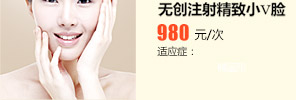
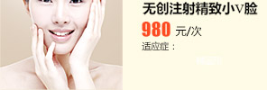
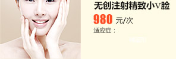

- 肤色暗沉
- 面部色斑
- 皮肤粗糙
- 肤色不均匀
- 红色痘印
- 黑色痘印
- 增生性凸疤
- 凹洞型痘印
 
更多优惠我要咨询

更多优惠我要咨询
- 圆形脸
- 椭圆形
- 梨形脸
- 方型脸
- 菱形脸
- 眼周皱纹
- 鼻唇沟纹
- 等面部皱纹
- 抬头纹

更多优惠我要咨询
激光美容
中医美容
江城医疗美容专科主任、学科带头人
江城医疗美容专科 激光美容科研组组长
进修于上海九院，师从王家璧、王之光
美国BOTOX（保妥适）认证注射医师
EME玻尿酸认证注射医师
国内资深激光美容专家
擅长：注射美容与激光美容，运用肉毒素、玻尿酸、胶原蛋白进行除皱、瘦脸、隆鼻、等
国内资深激光、中医美容专家
皮肤美容临床工作近10年
江城医疗美容专科主任、学科带头人
江城医疗美容专科 中医美容科研组组长
进修于上海中医药大学附属龙华医院、上海九
院、华山医院
擅长：光老化皮肤(皮肤松弛,皱纹,萎缩,毛孔粗大,皮肤色素增加/减少,毛细血管扩张等)


1.鲜红斑痣和血管瘤
2.治疗更大范围的血管性病变
3.面部/腿部毛细血管扩张，酒渣鼻
4.瘢痕，疣，妊娠纹，痤疮等
全脸紧肤、去双下巴、去眼周皱纹、去鼻唇沟、去颈纹瘦脸、身体塑形、上眼睑提升、下眼袋收紧。
细小皱纹、痤疮疤、毛孔粗大、色斑、皮肤暗黄、毛细血光扩张、改善皮肤松弛、提升皮肤弹性。
1、因遗传或者种族导致的多毛症。
2、因自身内分泌系统紊乱所导致的多毛症。(一般是雄激素分泌过多)
3、任何肤色的多毛人群都可以进行脱毛。
美白靓肤：淡化斑点、改善肤色、祛黄祛黑
抗衰嫩肤：重塑真皮组织，紧实提升、收缩毛孔
祛皱紧肤：收紧提拉面部轮廓，祛皱紧肤、淡化真性皱纹。
专业治疗青春痘、粉刺、面部皮肤粗糙、毛孔粗大，清除脓疱内油脂、淤血及堵塞毛孔的细菌杂质。
面部功效：改善肤质，收细毛孔，根部美白祛斑
身体功效：活化细胞，去斑去印，提升轮廓
快速瘦身：塑型紧肤，消除水肿，溶解囤积脂肪
治疗疤痕、红斑痤疮、治疗黑斑病、雀斑、色素沉着异常症状等的色素沉着性病变以及消除皱纹、缩小毛孔、增加皮肤弹性。